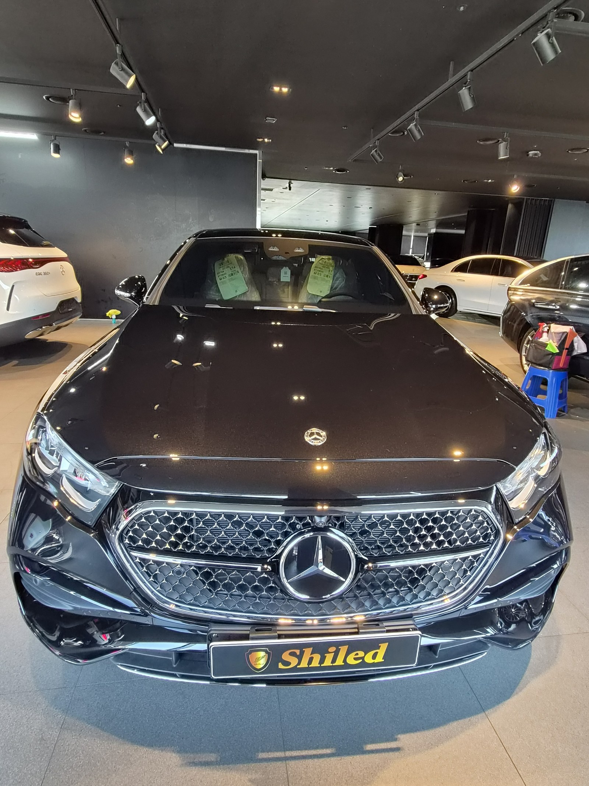
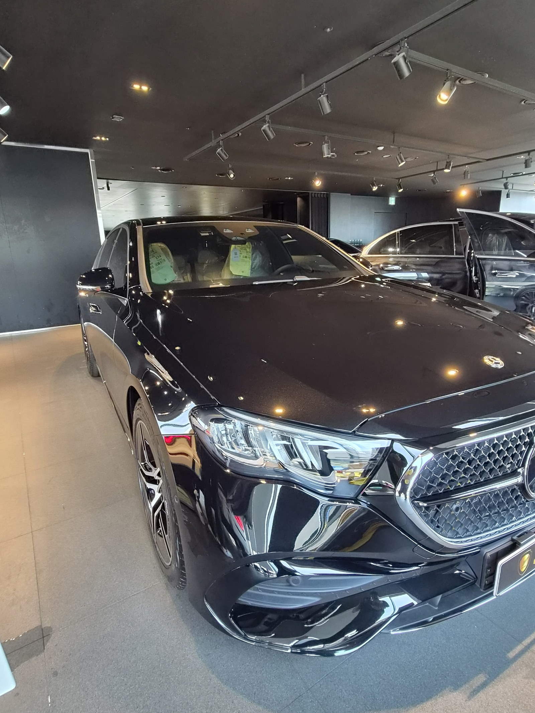
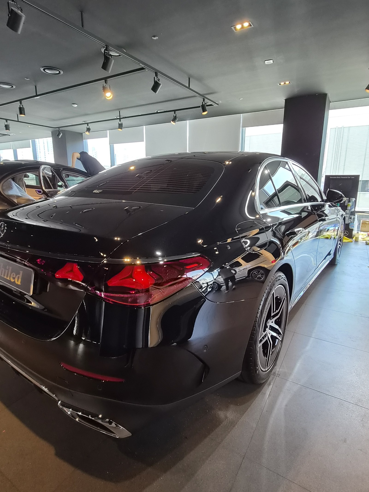
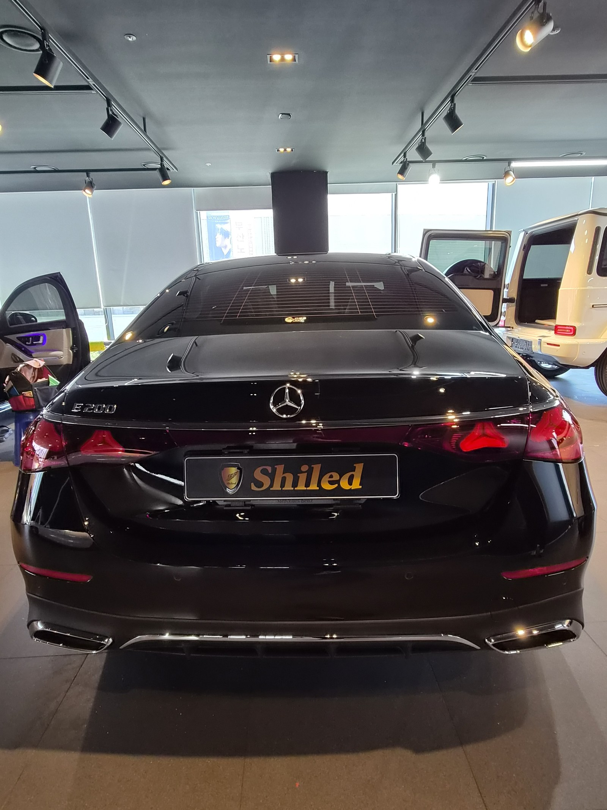
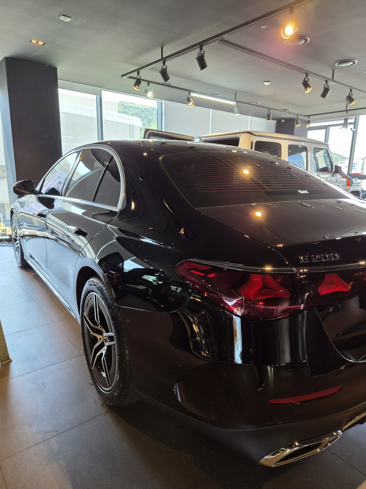
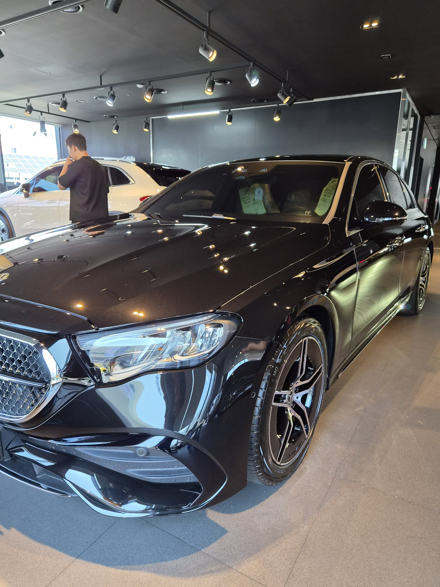
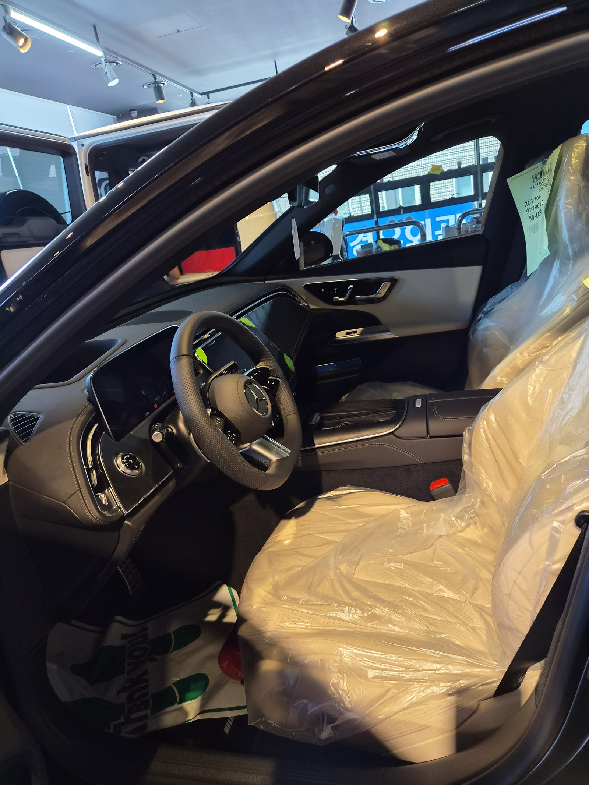
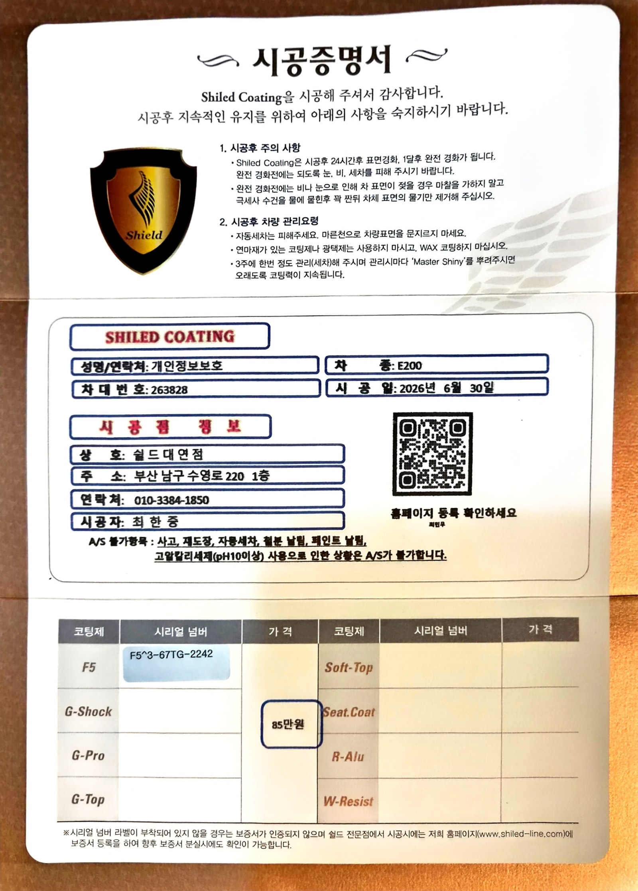

벤츠 E200 검정입니다. 아직 출고 전, 새 차입니다.
이 차는 출고 전에 F5 유리막코팅으로 진행했습니다.

벤츠 신차는 출고 전과 후 중 언제 코팅해야 하나
도장면이 가장 깨끗할 때 올리는 코팅이 가장 오래갑니다.
출고 후에는 운행과 세차로 미세한 잔기스와 오염이 쌓이기 시작합니다. 그게 쌓이기 전, 신차 상태 그대로일 때 코팅막을 입혀두는 겁니다. 그래서 쉴드광택은 출고 전 신차 시공을 맡아 진행합니다.

검정 벤츠에 왜 F5인가
F5는 색감 깊이를 끌어올려 글로시함을 극대화하는 코팅입니다.
검정은 발색이 얼마나 깊어 보이느냐가 관건입니다. 여기에 F5를 올리면 젖은 듯한 윤기가 생겨, 같은 검정이라도 더 진하고 도톰하게 보입니다. 벤츠 특유의 라디에이터 그릴 광택도 F5를 올리면 한층 또렷해집니다. 코팅제는 대표가 화학공학 전공으로 직접 개발·제조한 제품입니다.


기술자의 팁
신차라고 바로 코팅을 올리지 않습니다. 운송·보관 중 묻은 미세 오염을 디테일링 세차와 탈지로 걷어낸 뒤에 올립니다. 깨끗한 바탕 위에 올려야 코팅이 제대로 밀착합니다.


실내도 신차 그대로 관리합니다
출고 전 차량은 안팎 컨디션을 함께 정리합니다.
스티어링 휠과 대시보드는 아직 보호 필름이 씌워진 신차 그대로입니다. 외부 도장은 F5로 윤기를 잡고, 인도까지 깨끗한 상태로 관리합니다.

시공증명서를 함께 드립니다
모든 시공 차량에 시공증명서를 드립니다.
차종·시공일·코팅제 시리얼 번호가 적혀 있고, 홈페이지에 등록해 보증을 받으실 수 있습니다. 이 차는 F5 코팅으로 기록돼 있습니다.

차종·시공일·코팅제 시리얼이 기재된 시공증명서
자주 묻는 질문
Q. 벤츠 신차는 출고 전과 후 중 언제 코팅해야 하나요?
A. 출고 전을 권합니다. 도장면이 가장 깨끗할 때 올리는 코팅이 가장 오래갑니다. 출고 후 운행이 시작되면 잔기스와 오염이 쌓이기 시작하는데, 그 전에 코팅막을 입혀두는 것이 유리합니다.
Q. 검정 벤츠에는 어떤 코팅이 좋나요?
A. 이 차는 F5로 진행했습니다. F5는 색감 깊이를 끌어올려 글로시함을 극대화합니다. 검정에 젖은 듯한 윤기를 더해, 같은 검정이라도 더 진하고 도톰하게 보입니다.
Q. 신차코팅도 전처리를 하나요?
A. 합니다. 신차라도 운송·보관 중 미세 오염이 묻습니다. 디테일링 세차와 탈지로 표면을 정리한 뒤 코팅을 올려야 제대로 밀착합니다.
Q. 쉴드광택 위치와 예약은 어떻게 하나요?
A. 부산 남구 유엔로220 1F 쉴드광택입니다. 예약·상담은 010-3384-1850, 대표 최한중이 직접 상담하고 책임 시공합니다.
새 차일수록 시작점이 다릅니다. 가장 깨끗할 때 입혀두십시오.
제품을 직접 만드는 사람이 직접 시공합니다.
부산에서 벤츠 신차코팅을 고민 중이시면 편하게 연락 주십시오.
어떤 차를 타냐보다 어떻게 타냐가 중요합니다~!
📞 010-3384-1850 견적 문의쉴드광택 · 부산 남구 유엔로220 1F · 대표 최한중